This tutorial helps you Bluetooth Send Receive
Soifgo has the capability to send and receive serial Bluetooth data in a controlled manner. Therefore, each transmission and reception must include a key or address—either a number or a text string.
port:1volt:24There are no limitations on sending; this format is used when transmitting data to the microcontroller. However, receiving must include a key or address so that the corresponding configuration button can be displayed.
In the image below, you can see two examples of data transmission:
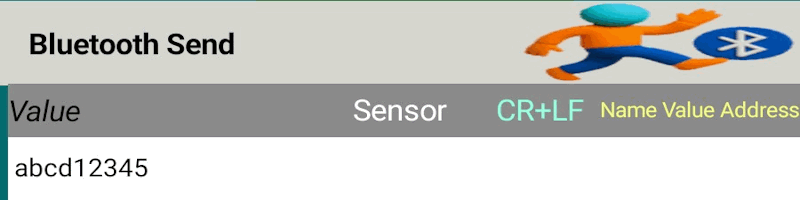
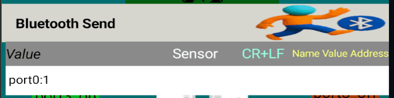
There are two types of Bluetooth data reception:
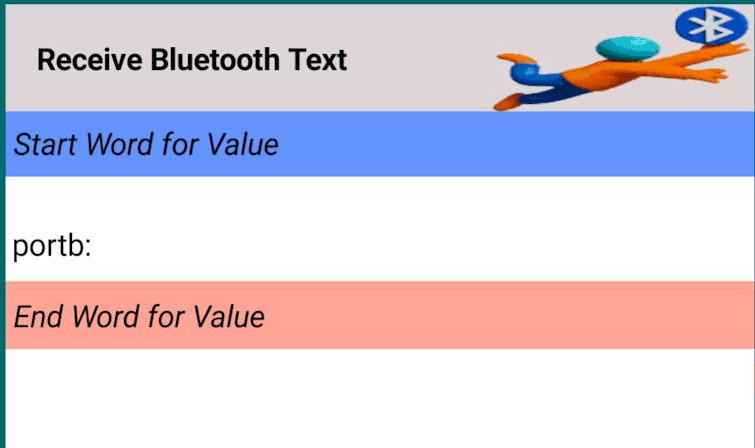
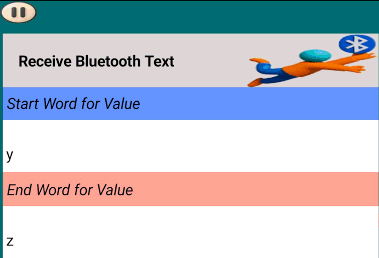
When sending serial Bluetooth data to SoiftGo—whether from a microcontroller or any other device—you must use a structured format like:
temp1:128SoiftGo interprets temp1: as the address of the configured button, and 128 as the value to be displayed.
temp1:128temp1: widget address
128 value to display
value = 128
PRINT "temp1:"; valuevalue = 128
PRINT "temp1:" + STR$(value)int value = 128;
printf("temp1:%d", value);int value = 128;
char buffer[20];
sprintf(buffer, "temp1:%d", value);
UART_SendString(buffer);int value = 128;
std::cout << "temp1:" << value;int value = 128;
std::string msg = "temp1:" + std::to_string(value);
Serial.write(msg.c_str());int value = 128;
void setup() {
Serial.begin(9600);
}
void loop() {
Serial.print("temp1:");
Serial.println(value);
delay(1000);
}value = 128
uart.write("temp1:" + str(value))import serial
ser = serial.Serial("COM5", 9600)
value = 128
ser.write(f"temp1:{value}".encode())const { SerialPort } = require("serialport");
const port = new SerialPort({ path: "COM5", baudRate: 9600 });
let value = 128;
port.write("temp1:" + value);#@@, you will see: 128#@@.If you want to activate effects without showing the name or value:
In this mode, the button can act like a gauge or needle, functioning with its effect while hiding both label and numeric value.
Another method of Bluetooth transmission in SoifGo allows sending smartphone sensor values to a microcontroller. Currently, three types of sensors are supported:
In the next step, go to the Edit mode and add a new button to the interface.
pwm1a: (used here to control motor speed).pwm1a:.Once connected to Bluetooth and in Play Mode, the output will be sent in this format:
pwm1a:513This means the X-axis motion value has been scaled and offset (as configured earlier) and is now transmitted to the microcontroller under the address pwm1a:
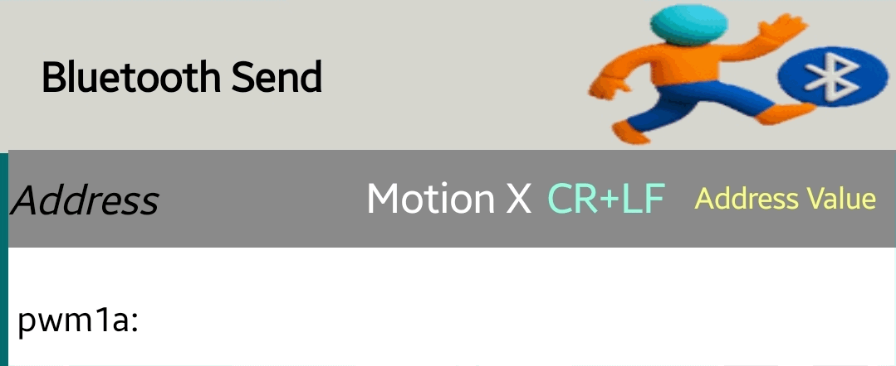
To ensure compatibility with microcontrollers that do not support decimals or negative numbers, you can configure a scaling factor and offset:
adjusted_value = (original_value × scale) + offsetFor example, to send X-axis motion data:
40512 to shift the range0–1024, suitable for most microcontrollersThe result is shown in the middle section of the window under "Calculated Value".
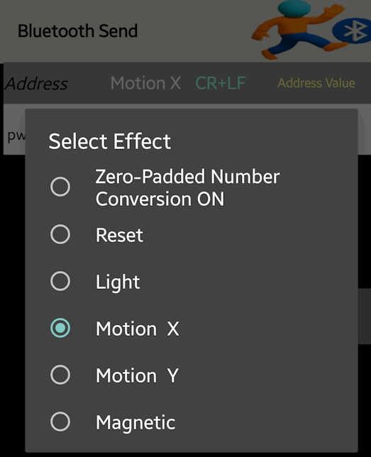
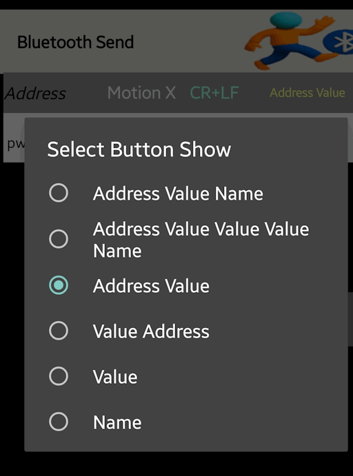
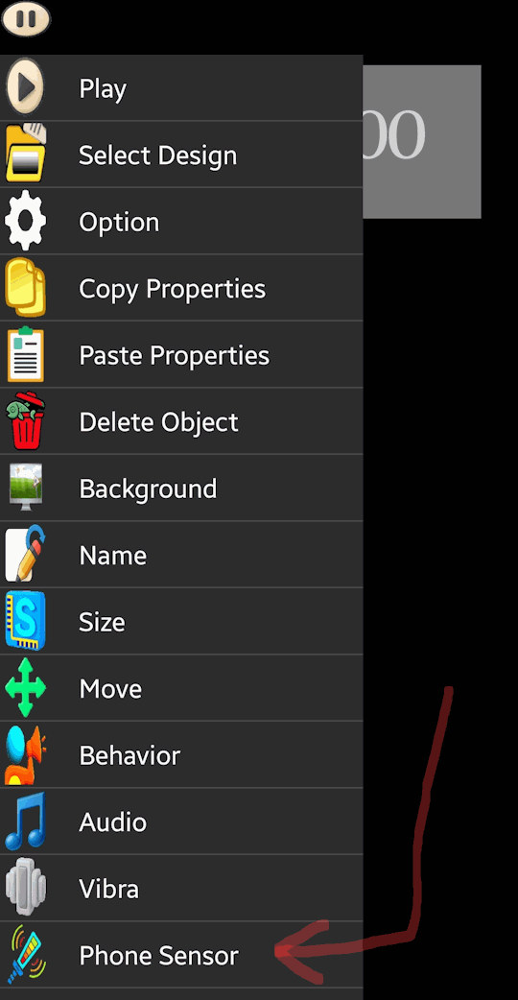
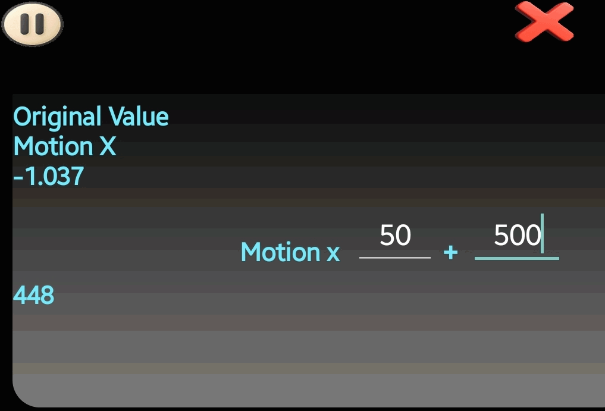
This file provides a working example of Bluetooth communication. After extracting the ZIP archive:
soifgo folder in your phone's storage.page and icon folders for integration.This ensures that the Bluetooth send/receive example is properly configured and ready to use within your environment.
Download the soifgo file:
📦 Download soifgo_design_Bluetooth.zipThe following file contains both the BASCOM source and the compiled HEX file for the microcontroller. Remember to use the HEX file when programming the device.
With these files, you can either directly program the microcontroller or adapt the source for alternative development environments.
Download the Bascom and hex file:
📦 Download the Bascom and hex file.zipThe following file contains the schematic diagram of the microcontroller and the Bluetooth module. This schematic illustrates the wiring and connections required for proper communication between the two components.
With this schematic, you can confidently set up the hardware portion of your project and integrate it with the provided software examples.
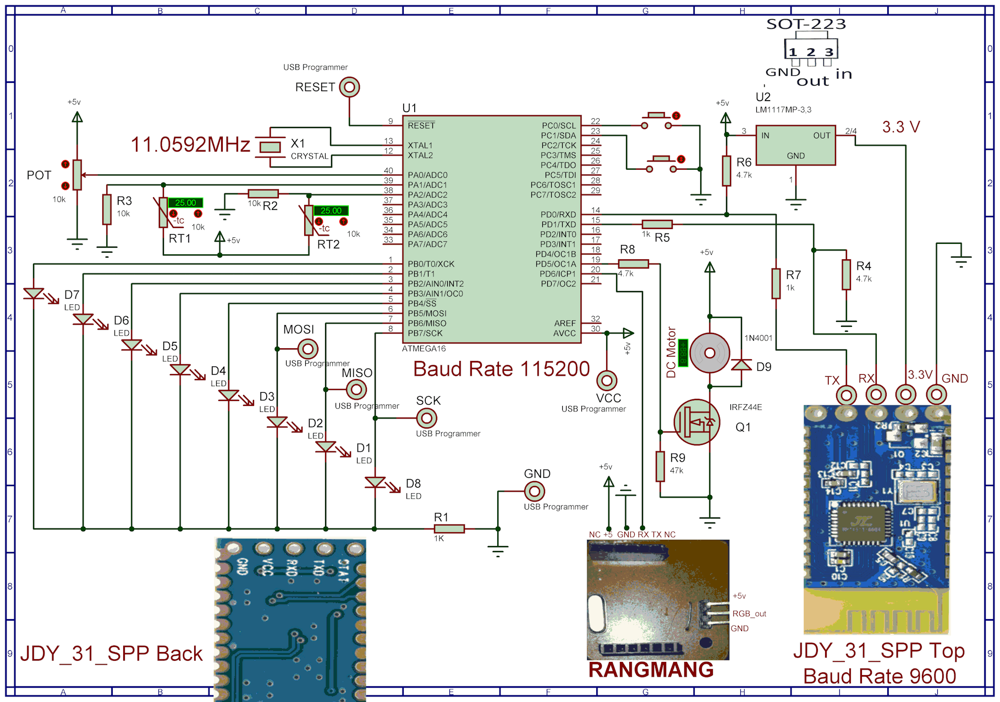
The images illustrate two different versions of the Bluetooth module:
3.3V.5V operation.Use the appropriate version depending on your microcontroller's voltage requirements and available power supply.
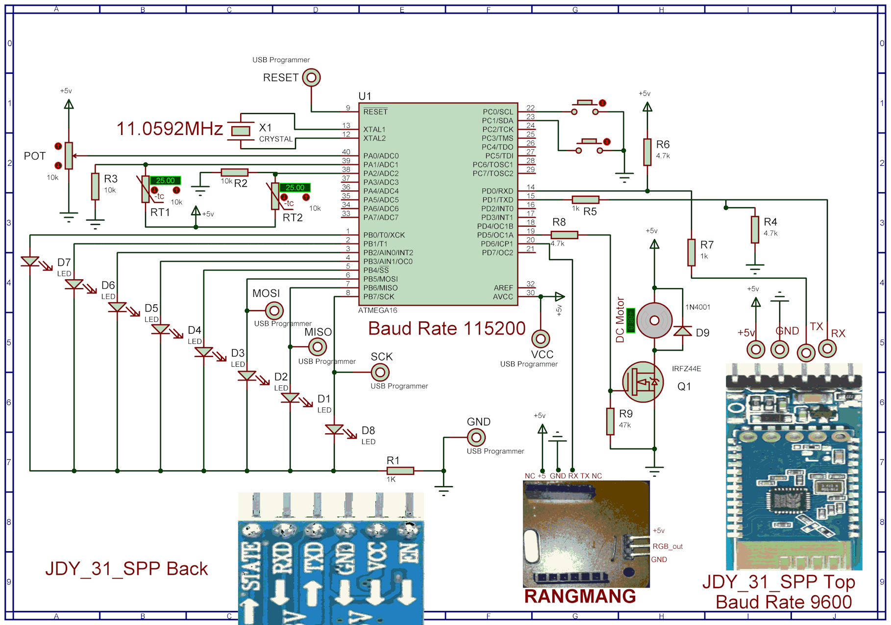
The provided ZIP archive contains the Proteus simulation project. You can use this file to customize and adapt the schematic or layout according to your specific requirements.
By customizing the Proteus project, you can experiment with different configurations and ensure compatibility with your design goals.
Download the Proteuse_Bluetooth file:
📦 Download the Proteuse_Bluetooth file.zipThe video below demonstrates the real-world operation and interaction between the SoifGo system and the microcontroller. It provides a hands-on example of how data is exchanged and processed in practice.